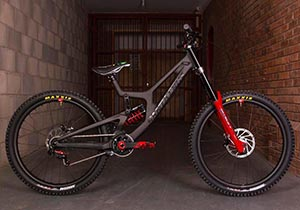
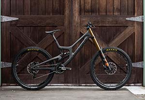

La distancia entre ejes es larga -más de 45” o 1143 mm-, lo que asegura una mayor estabilidad,
pero se sacrifica precisión en los giros cerrados.
La geometría de la bicicleta es más holgada, con lo que se consigue situar al ciclista mucho más atrás,
para lograr una mejor conducción en terrenos difíciles. El ángulo del tubo de dirección o head tube
es más suelto (65° o menos), suele sobredimensionarse para obtener mayor rigidez y resistencia, y en
algunos casos, el ángulo del tubo de dirección es ajustable para adaptar la bicicleta al estilo de conducción del ciclista.
Los cuadros de descenso poseen una geometría diseñada para manejar el estrés que supone conducir sobre terreno
muy irregular y con obstáculos: rocas, caídas, saltos, etc.

Las bicicletas de descenso utilizaron ruedas de 26 pulgadas durante años, al igual que el resto de las MTB. Sin embargo,
las tendencias han impulsado el uso de las 27.5”, y con las modificaciones a las reglas de competición de la UCI, ahora
algunas marcas están experimentando con ruedas de 29 pulgadas.
Así mismo, se prefiere el uso de neumáticos anchos (2.5” o 63.5mm e incluso mayor) y con tacos que si bien pueden ser
de distintas configuraciones que respondan a los gustos del ciclista y las necesidades del curso, preferentemente serán
de tacos separados, ideales para el terreno sinuoso.
El número de radios suele ser de 32 o más, ya que más radios, significa evitar el tener que ajustar la rueda con mayor
frecuencia.
Los ciclistas de descenso suelen inflar sus neumáticos a una presión más baja para mantener la tracción en superficies
sueltas y absorber mejor el impacto, y estos neumáticos a menudo usan una carcasa resistente a los pinchazos.

Generalmente, las bicicletas de descenso están equipadas con 7 a 10 marchas, con tendencia al uso de sistemas monoplato.
El uso de un solo plato, además de reducir una fracción de peso, elimina el uso de desviador delantero y por lo tanto un punto de posible falla.
Debido a las exigencias a las que son sometidas, las fuertes caídas y los encuentros con objetos inamovibles, generalmente tienen
una guía de cadena para evitar el descarrilamiento y protecciones en el monoplato. Además, en la actualidad, algunos fabricantes están experimentando
con cajas de cambios internos para mejorar la confiabilidad.
Los frenos deben ser lo suficientemente potentes como para detener a los ciclistas de forma rápida y segura. Por lo que actualmente, en su mayoría
cuentan con sistema de frenos de disco, de al menos 8 pulgadas el rotor e hidráulicos de cuatro pistones, con lo que se asegura un frenado preciso.